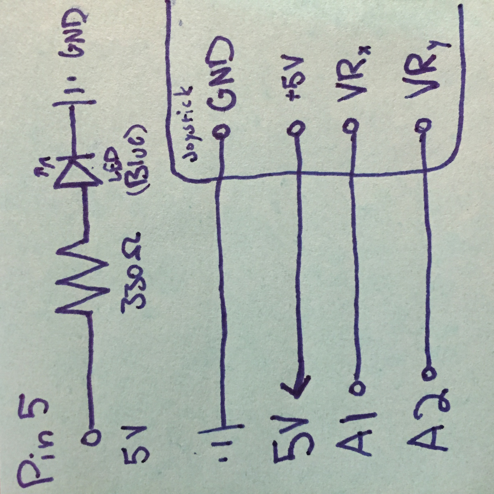
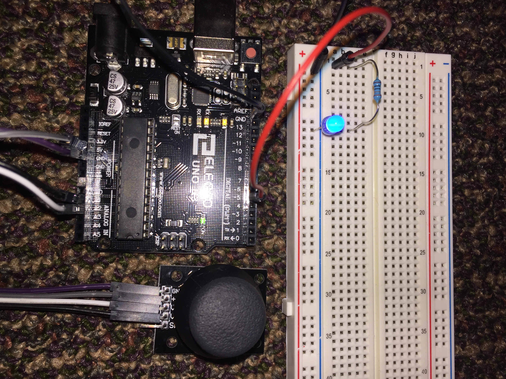

Schematic

Image 2. A schematic of the joystick connected to the Arduino following the given documentation. Resistors within the joystick allow for safe and direct connection to power. The blue LED is using a 330 ohm resistor. Given a 3.2 voltage drop, and V=IR, 5-3.2=x*330, we have a current of 12mA, which is safe for the LED.
Circuit

Image 3. The final circuit, with a joystick, an LED, and a webpage running javascript.
Code
Arduino Code
// the setup function runs once when you press reset or power the board
void setup() {
// sets the data rate to 9600 bits per second
Serial.begin(9600);
// set the timeout for parseInt
Serial.setTimeout(10);
// set pin 5 to ouput mode
pinMode(5, OUTPUT);
}
// the loop function runs over and over again forever
void loop() {
// input from the x-direction movement of the joystick, ranges from 0 to 1023
int s1 = analogRead(1);
// input from the x-direction movement of the joystick, ranges from 0 to 1023
int s2 = analogRead(2);
// prints out the x value of the joystick, followed by the y value
Serial.println(String("[") + s1 + String(",") + s2 + String("]"));
// check to see if there is input serial data
if (Serial.available() > 0) {
// save the input data to a variable
int inByte = Serial.read();
// send back the input as raw binary data
Serial.write(inByte);
// use the input data to set the LED brightness
analogWrite(5, inByte);
}
}
p5 Code
// this variable is initialized to hold an instance of the serialport library
var serial;
// this variable is the name of the port used
var portName = 'COM6'
// this array holds data coming in over serial
var dataarray = [];
// this variable sets the default x position to 0
var xPos = 0;
function setup() {
serial = new p5.SerialPort(); // makes a new instance of the serialport library
serial.on('list', printList); // sets a callback function for the serialport list event
serial.on('connected', serverConnected); // callback for connecting to the server
serial.on('open', portOpen); // callback for the port opening
serial.on('data', serialEvent); // callback for when new data arrives
serial.on('error', serialError); // callback for errors
serial.on('close', portClose); // callback for the port closing
serial.list(); // lists the serial ports
serial.open(portName); // opens a serial port
createCanvas(1422, 650); // sets the display size
background(0x08, 0x16, 0x40); // sets the background color
}
// gets the list of ports
function printList(portList) {
// portList is an array of serial port names
for (var i = 0; i < portList.length; i++) {
// Displays the list the console
print(i + " " + portList[i]);
}
}
// call this to print that there has been a successful connection to server
function serverConnected() {
// print statement for debugging
print('connected to server.');
}
// call this to print that there has been a successful connection to server
function portOpen() {
// print statement for debugging
print('the serial port opened.')
}
// call if an error occurs to print out the error
function serialError(err) {
// print statement for debugging
print('Something went wrong with the serial port. ' + err);
}
// call if the serial port is closed to notify the user
function portClose() {
// print statement for debugging
print('The serial port closed.');
}
// listens for input from the serial port
function serialEvent() {
// if there is a serial port open
if (serial.available()) {
var datastring = serial.readLine(); // readin some serial
var newarray; // establish a new array to avoid overwriting the current array
try {
newarray = JSON.parse(datastring); // try to parse the serial
} catch(err) {
console.log(err); // if there is an error, log it to the console
}
// if the new array is in fact an object
if (typeof(newarray) == 'object') {
// set the current array to the newly input array
dataarray = newarray;
}
// notify the user via the console
console.log("got back " + datastring);
}
}
// map the input data to screen positions
function graphData(newData) {
// map the range of the input to the window height:
var yPos = map(newData, 0, 1023, 0, height);
// draw the line
line(xPos, height, xPos, height - yPos);
// at the edge of the screen, go back to the beginning:
if (xPos >= width) {
// reset the x position
xPos = 0;
// clear the screen by resetting the background:
background(0x08, 0x16, 0x40);
} else {
// pass
}
}
// if a key is pressed
function keyPressed() {
// this line sends the value of the key to the serial port
serial.write(key);
}
// present a visualization of the input data
function draw() {
stroke('rgba(0,255,0,0.25)'); // green
graphData(dataarray[0]); // graphs the first value of the array (the x position)
stroke('rgba(0,80,255,0.5)'); // blue
graphData(dataarray[1]); // graphs the second value of the array (the y position)
xPos++; // sets the next drawing position to be one pixel to the right of the current x position
}
Circuit Operation

Image 4. The circuit operating such that movement in the x direction is graphed in green and movement in the y direction is graphed in blue. The data input from our analogRead function ranges from 0 to 1023. When the joystick is in the middle, the x and y values are both about 500. When left and right movement is shown, it is in green where 1023 is left and right is 0 (I am holding th joystick upside down, so this is relatively true but in actuality, left is mapped to 0). Up and down movements are in blue where 1023 is given with the joystick at the bottom and 0 is the top. Again this is because I am holding the joystick upside down and would be reversed in actuality. The turquoise is the combination of the x and values.
When a key on the keyboard is pressed while the website is open, it sends the value of the key to the Arduino. The Arduino code then sets the LED brightness to be whatever that input value was.